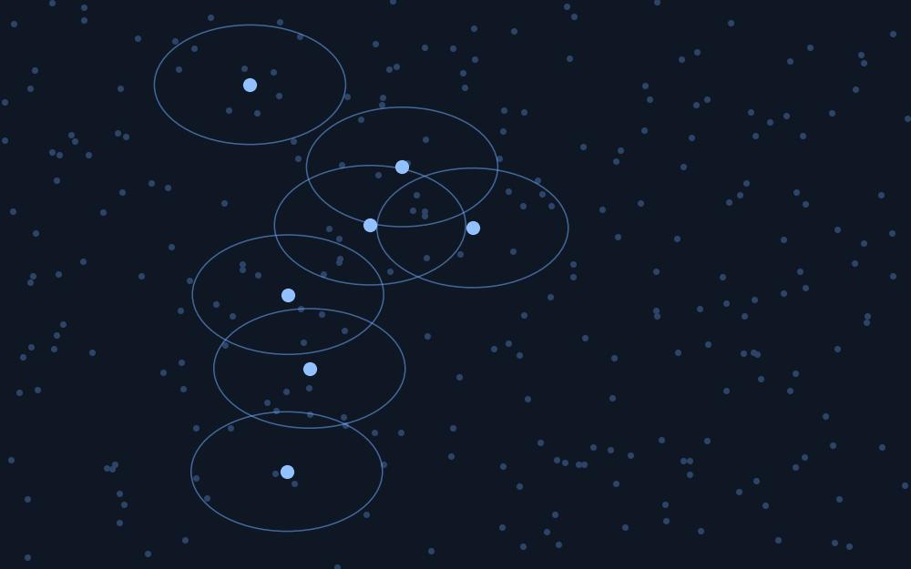
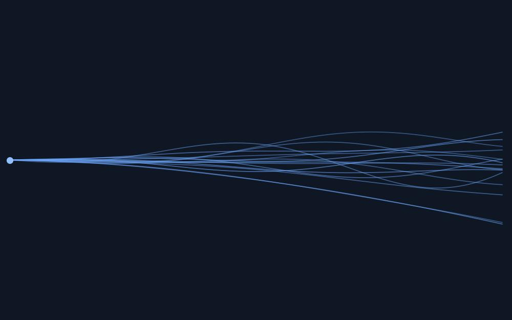
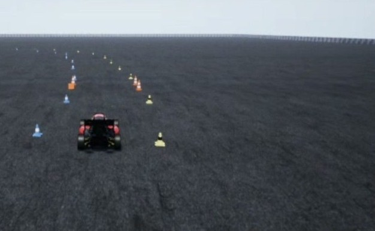
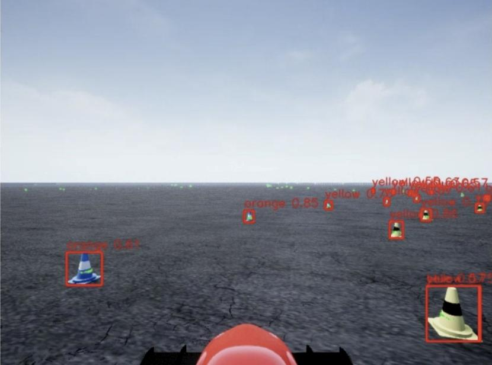

Robot Learning
TicketBank: location-targeted noise search for frozen diffusion policies
Daniel Ortiz Valencia
Under review, 2026
A frozen diffusion or flow-matching policy is normally run with one fixed noise sample reused everywhere, a "golden ticket". I test whether the best sample actually depends on where the objects start, and whether a bank of samples chosen per start state beats a single one at an equal episode budget. On a Franka checkpoint the pre-registered bank wins by 25.8 and 20.8 points on two of four checkpoints and ties on the rest. On robomimic Can at scale, 68,000 episodes, it beats a shuffled-bank control by 3.8 points but not the best single ticket. On Transport the early advantage did not survive compute matching: given the same budget the baseline search reaches 59.7% against the bank's 37.8%, which retired that claim. Every confirmatory run is pre-registered with a frozen script and fresh seeds, and nulls are reported alongside the wins.

Robot Learning
Physical persistence of sampled noise in diffusion policies
Daniel Ortiz Valencia
In progress, 2026
Does the noise a diffusion policy samples leave a lasting physical signature, and can you tell what a trajectory will do before executing it? In a frozen study of 6,176 validated episodes, a ridge model given the start state plus the noise predicts the 100-step tool path with 30.96% lower median error than start state alone, with a 95% confidence interval of 23.9 to 39.9 and a permutation p of 1e-4. The effect is real but bounded. By 300 actions that same linear model is worse than state alone, while the spread between tickets from one start state grows to 330 mm, so the influence persists even where this predictor stops being useful.

